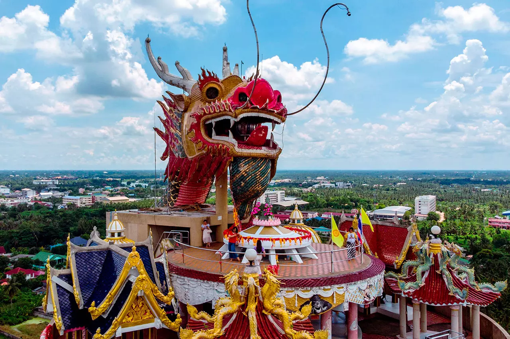
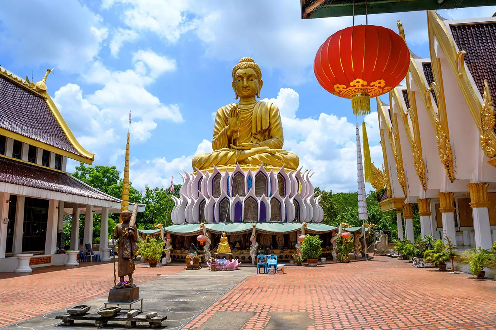
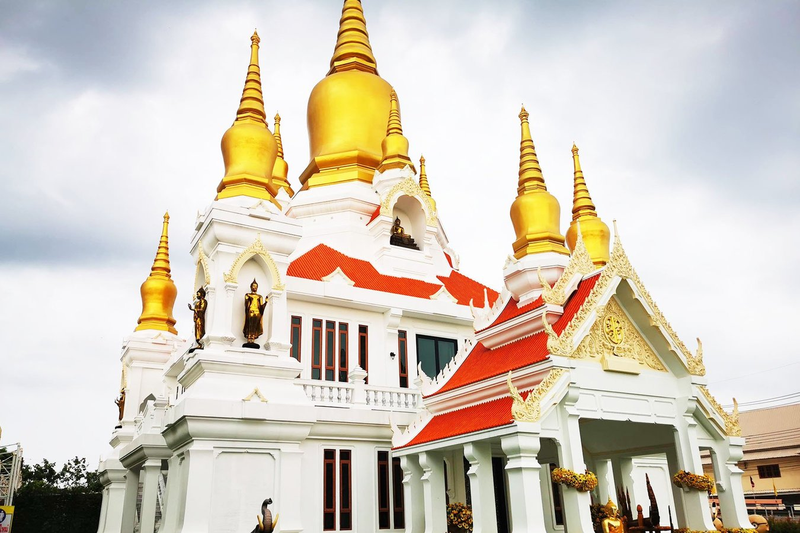
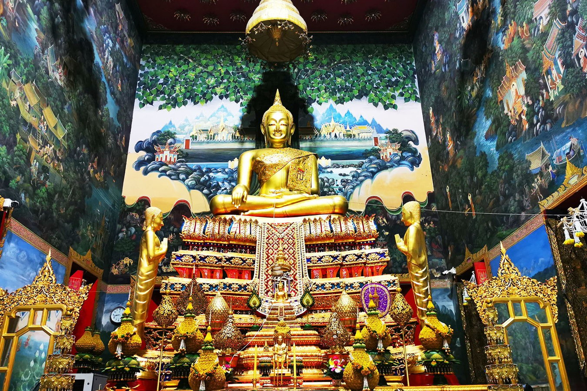
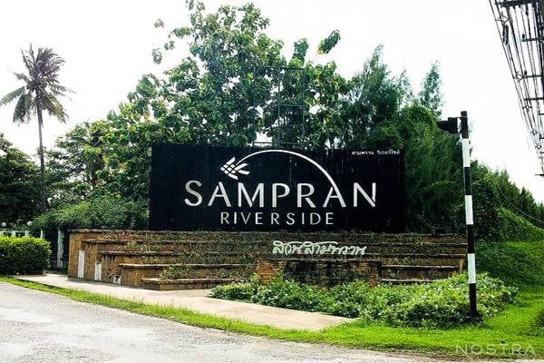
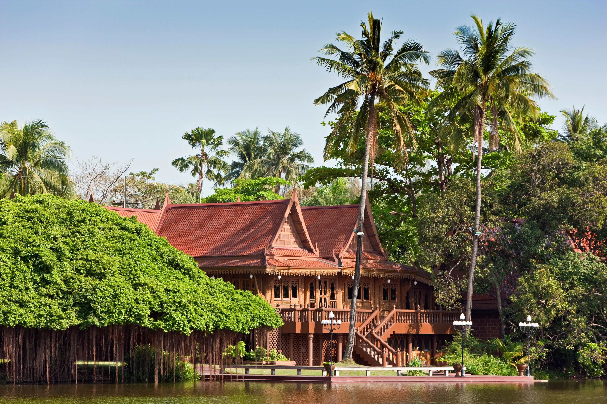
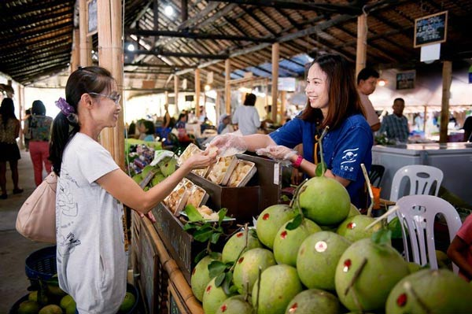
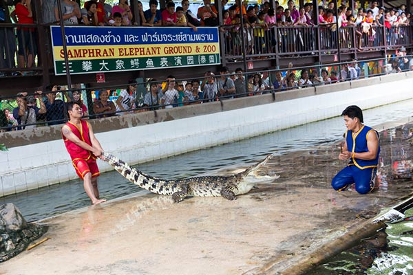
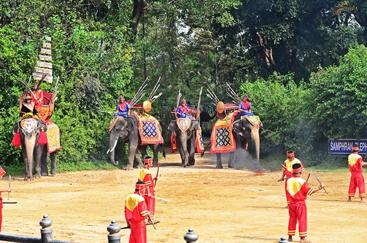

สถานที่น่าเที่ยวอำเภอสามพราน
1.วัดสามพราน
วัดสามพราน เป็นวัดที่สวยงาม และน่าทึ่งด้านสถาปัตยกรรมมากๆ อีกทั้งยังมีสิ่งที่โดดเด่นสะดุดตามาแต่ไกลก็คือ มังกรยักษ์ปีนตึกสูง ตัวมังกรมีความสวยงาม โดดเด่น สามารถเดินขึ้นไปตามตัวของมังกรไปทะลุบนชั้นดาดฟ้า และยังมีสถานที่สักการะขอพรอยู่มากมาย
ข้อมูล วัดสามพราน นครปฐม
ที่อยู่ : ตำบลสามพราน อำเภอสามพราน จังหวัดนครปฐม
พิกัด :ดูในแผนที่
ข้อมูลจาก : ไปที่เว็บ
2.วัดไร่ขิง
วัดไร่ขิง เป็นวัดเก่าแก่ ที่มีชื่อเสียงที่สุดแห่งหนึ่งในสามพราน ผู้คนมากมายต่างก็หลั่งไหลไปสักการะขอพร หลวงพ่อวัดไร่ขิง พระพุทธรูปเก่าแก่ที่น่าเลื่อมใส ประดิษฐานอยู่ในพระอุโบสถ ที่สวยงามด้วยจิตรกรรมฝาผนัง ภายในวัดยังมีเจดีย์สีทองที่สวยงามโดดเด่นด้านสถาปัตยกรรม บรรยากาศภายในวัดนั้นดีมากๆ เพราะตั้งอยู่ริมแม่น้ำ น่าไปเที่ยวทำบุญ สักการะขอพร เสริมสิริมงคลกัน
ข้อมูล วัดไร่ขิง นครปฐม
ที่อยู่ : ตำบลไร่ขิง อำเภอสามพราน จังหวัดนครปฐม
พิกัด :ดูในแผนที่
ข้อมูลจาก : ไปที่เว็บ
3.สวนสามพราน ริเวอร์ไซด์
สวนสามพราน ริเวอร์ไซด์ ตั้งอยู่ริมแม่น้ำท่าจีน ซึ่งนอกจากจะให้บริการในส่วนของโรงแรมที่พักแล้ว ที่นี่ยังมีกิจกรรมท่องเที่ยวเชิงอนุรักษ์ให้ทำเพื่อการพักผ่อน โดยเฉพาะกิจกรรมเสริมสร้างความรู้เกี่ยวกับความเป็นไทย อย่างเช่นกิจกรรมที่หมู่บ้านไทย นักท่องเที่ยวจะได้เรียนรู้วิธีการสานปลาตะเพียน การทำนาปลูกข้าว การละเล่นไทยโบราณ ศิลปะการต่อสู้ เครื่องปั้นดินเผา การร้อยมาลัย การทำลูกประคบสมุนไพรไทย ครัวไทยโบราณ ฯลฯ
ข้อมูล สวนสามพราน ริเวอร์ไซด์ นครปฐม
ที่อยู่ : กม. 32 ถนนเพชรเกษม อำเภอสามพราน จังหวัดนครปฐม
พิกัด :ดูในแผนที่
ข้อมูลจาก : ไปที่เว็บ
4.ตลาดสุขใจ

ตลาดอินทรีย์ที่สนับสนุนให้เกษตรกรที่ทำเกษตรอินทรีย์ในอำเภอสามพราน จังหวัดนครปฐม และจังหวัดใกล้เคียง ซึ่งอยู่ในโครงการสามพรานโมเดล ได้นำผลผลิตเกษตรอินทรีย์มาจำหน่ายให้กับผู้บริโภคโดยตรง มีทั้งผัก-ผลไม้สด ๆ ปลอดสารพิษ ให้ได้เดินเลือกซื้อกันอย่างจุใจ ไม่เพียงเท่านั้นยังมีร้านอาหาร ร้านขนมโบราณมาจำหน่าย โดยเน้นใช้วัตถุดิบที่ดีต่อสุขภาพ ปรุงเอง ราคาไม่แพง ให้ได้อิ่มอร่อยกันแบบฟินๆ
ข้อมูล ตลาดสุขใจ นครปฐม
ที่อยู่ : ริมถนนเพชรเกษม สวนสามพราน อำเภอสามพราน จังหวัดนครปฐม
พิกัด :ดูในแผนที่
ข้อมูลจาก : ไปที่เว็บ
5.ลานแสดงช้างและฟาร์มจระเข้สามพราน
ลานแสดงช้างและฟาร์มจระเข้สามพราน แหล่งท่องเที่ยวในดวงใจของทั้งนักท่องเที่ยวชาวไทยและชาวต่างชาติที่นำช้างไทย และจระเข้มาแสดงโชว์ความสามารถในรูปแบบที่น่าสนใจ นักท่องเที่ยวจะได้เพลินเพลินไปกับการแสดงช้างที่สนุกสนาน การแสดงจับจระเข้ด้วยมือเปล่าสุดระทึกใจ การแสดงมายากล การถ่ายภาพกับลูกสิงโตสุดน่ารัก หรือจะนั่งช้างท่องอุทยานก็ได้เช่นกัน
ข้อมูล ลานแสดงช้างและฟาร์มจระเข้สามพราน นครปฐม
ที่อยู่ : ริมถนนเพชรเกษม กม. 30 อำเภอสามพราน จังหวัดนครปฐม
พิกัด :ดูในแผนที่
ข้อมูลจาก : ไปที่เว็บ